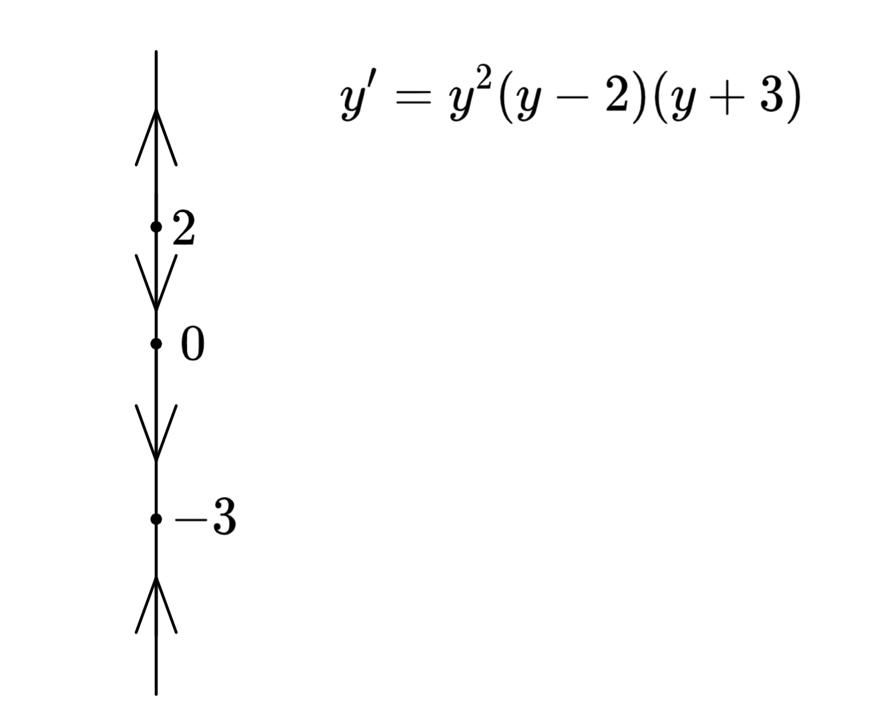

<- Unit 4|Series Solutions at Ordinary Points ->
First order autonomous equations can be written as \(y'=f(y)\), where there are no instances of the independent variable \(x\). Examples include: \(y'=\sin y, y' = 12e^y+12y, y'=\tan(12y^2+42)\).
For autonomous equations, critical points exist where \(y'=0\). If the function has a critical point at \(y=c\), then \(c\) is a solution to the equation because the derivative of a constant function is always \(0\). This kind of solution is called an equilibrium solution.
For autonomous equations where \(f(y)\) is a polynomial, \(y'\) and \(\frac{\partial f}{\partial y}\) are continuous at any point, so—according to the existence and uniqueness theorem—every point has a unique solution. This means that solution curves don’t cross. Equilibrium solutions act like asymptotes because other solution curves can’t cross them.
Autonomous equations are often difficult to solve. A phase line, or 1D phase portrait, can be used to represent the behavior of all solutions to the equation. To make a phase line, a vertical line is drawn, and all critical points are represented. Then, the sign of \(y'\) is obtained in each segment and represented as arrows—positive is up and negative is down.
Example: draw a phase line for the autonomous equation \(y'=y^2(y-2)(y+3)\)
The critical points are \(y=0, 2, -3\).
